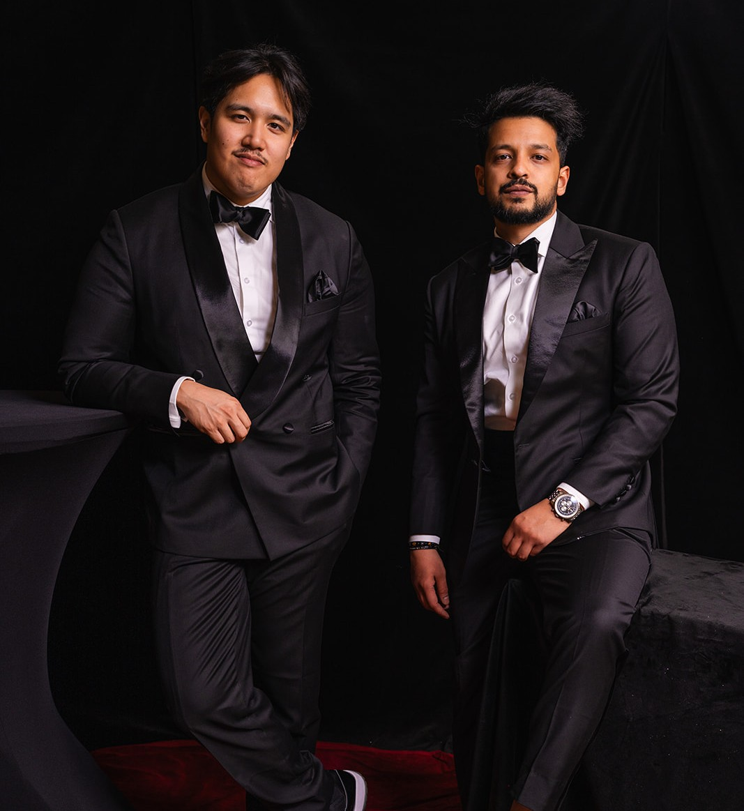
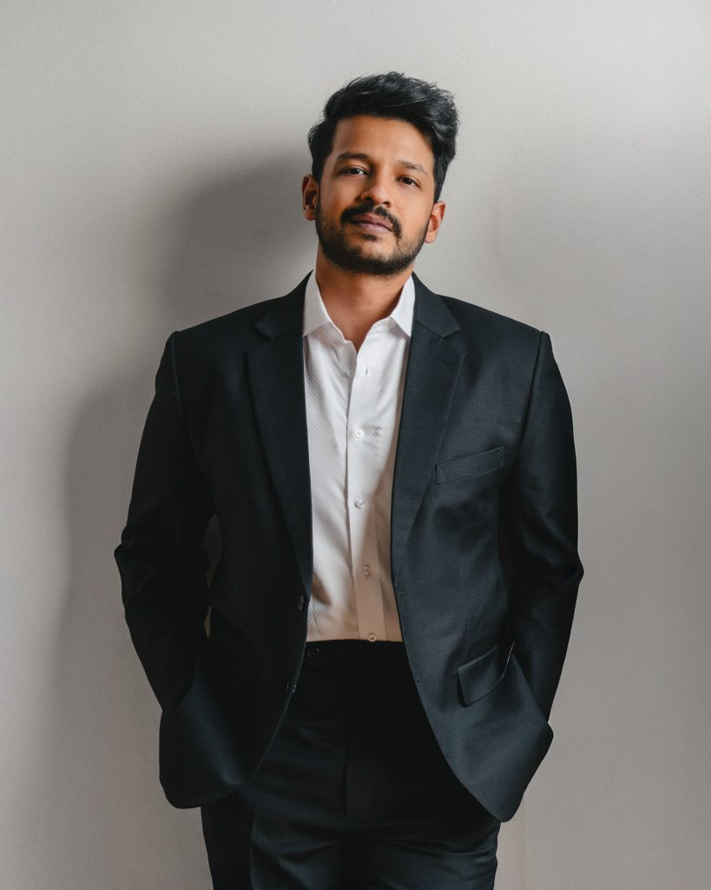
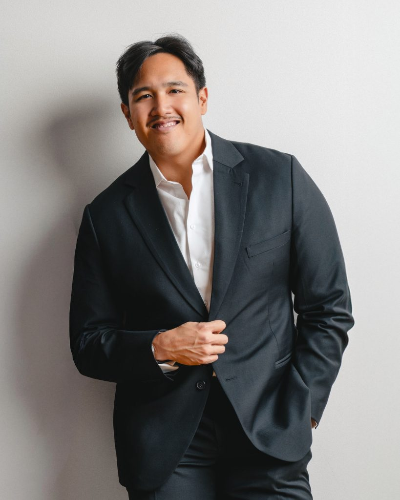

N° 01 — Portrait
Ein Atelier für Hochzeitsbilder. Wien, seit 2020.

Das Studio, Wien.
Das Studio
Kiran und Ian — Fotografen und Filmemacher aus Wien. Hybrid, befreundet, beide hinter der Kamera, wenn ihr euch das Jawort gebt.
„Ein Tag. Zwei Perspektiven. Bilder, die bleiben — und Filme, die sich bewegen wie die Erinnerung selbst.“

Kiran Kothakuzhakal
— Fotograf & Videograf
Kam über Mode- und Food-Fotografie zur Hochzeit — und blieb, weil ihn die Menschen dahinter nicht mehr losließen. Seitdem erzählt Kiran Liebesgeschichten in Bild und Bewegung: warm, ruhig, mit feinem Gespür für den flüchtigen Moment zwischen zwei Blicken.
„Ich fotografiere nicht den Tag. Ich fotografiere, wie er sich anfühlt.“

Ian Pasahol
— Fotograf & Videograf
Einst skeptisch gegenüber Hochzeitsfotografie — bis Kiran seine eigene Hochzeit festhielt und ihm die Magie darin zeigte. Heute: Autodidakt, Beobachter, Vertrauensbauer. Ian schafft Vertrauen, sodass die Kamera in den Hintergrund tritt — und eure Aufmerksamkeit ganz bei euch beiden bleibt. Genau diese Momente fängt er ein.
„Die besten Bilder entstehen, wenn niemand mehr an die Kamera denkt.“
N° 02 — In Numbers
100+
Hochzeiten
5
Jahre
★ 5.0
Bewertung